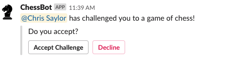
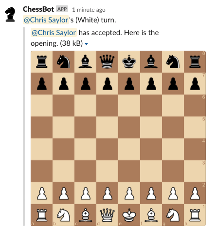

Challenging a player¶
In order to begin a new game, you must first challenge a player.
To do so, mention the ChessBot and the user you wish to challenge.
@chessbot challenge @chris

The challenged player will receive the challenge from the ChessBot.

The challenged player can choose to accept the challenge or decline.

Once the challenge player accepts the challenge, the game begins.
